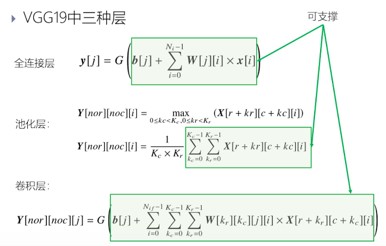

智能计算系统 第六章 深度学习处理器原理
深度学习处理器概述
神经网络越来越大，越来越深 为什么需要深度学期处理器
深度学习应用广泛 - 图像识别、语言处理、自然语言处理、博弈游戏等领域 - 已经渗透到云服务器和智能手机的方方面面
通用CPU/GPU处理在人工神经网络效率低下 - 谷歌大脑：1.6万个CPU核跑了数天完成猫脸识别训练 AlphaGo：和李世石下棋用了1202个CPU和200个GPU
专门的深度学习处理器
- 图形处理 GPU
- 信号处理 DSP
- 智能处理 ？
- 未来每台计算机可能都需要一个专门的深度学习处理器
- 云服务器到智能手机
- 应用面将超过GPU：每年数十亿片
发展历史
第一次热潮 - 1951，SNARC - 1960，Mark-I
第二次热潮 - 1989，Intel ETANN - 1990，CNAPS - 1993，MANTRAI - 1997，预言神
1990s的神经网络处理器 - 结构简单 - 规模小
第三次热潮 2006至今 - 2008 英伟达GPU - ……
深度学习处理器发展的三个因素 技术、体系结构、应用
深度学习处理器设计思路
介于专用芯片和通用芯片之间。 能效和通用性中（不可兼得）取平衡 - 算法范围界定、算法分析 - 自定制硬件，利用算法特性 - 阻碍高效率：带宽、访存速度、访存代价
目标算法分析
要完成 VGG19 卷积神经网络 分析什么 - 计算：是否存在固定重复的计算模式 - 访存：数据局部性原理、数据和计算的关系（对于带宽的需求）
VGG19 全连接层
输入向量x，乘上矩阵W，对结果送入激活函数得到输出 计算特点 - 向量内积、向量元素操作 - 没有复杂控制流
VGG 19 卷积层
计算特点 - 矩阵内积、向量的元素操作 - 无复杂控制流
VGG 19 池化层
MAX Pooling AVG Pooling 计算特点 - 向量的元素操作 - 无复杂控制流
总结 VGG 19
1.14亿个参数 卷积、池化、全连接 计算过程间接 25层 网络 16层卷积 3*3卷积核，图大小不变 5层池化 3层全连接 - 计算特征 乘法加法（内积） - 访存特征 外循环复用，复用距离等于Ni W内外循环五服用 y[j]内循环复用，复用距离等于1
可解偶性、可复用性
数据量大（尤其是全连接层） 参数占用内存远大于Cache，需要循环分块降低访存开销
深度学习处理器 DLP 结构
深度学习专用 Deep Learning Processor DLP 结构 - 指令集 - 流水线 - 运算部件 - 访存部件 - 算法映射
指令集
- 计算机的抽象模型
- 定义了体系结构
- 软硬件的唯一接口
- 为什么采用指令集
- 灵活性：支持未来可能出现的新的深度学习算法
- 通用性：支持广泛的深度学习算法
设计原则 - 数据级并行 - 可向量化操作
DLP 指令集 - 支持向量运算、矩阵运算 - Load-store结构：只通过load和store指令访问主存 - 64bit定长指令，变长操作数（寄存器指定长度） - 控制指令 - jump 立即数跳转指令 - CB 条件分支指令 - 数据传输指令 - load/store指令：主存和片上存储交互 - MLOAD/MSTORE：矩阵数据 变长 - VLOAD/VSTORE：向量数据 变长 - SLOAD/SSTORE：标量数据 - MOVE 指令：片上数据传输 - MMOVE，VMOVE，SMOVE - 计算指令 - 矩阵运算 - MMV, VMM, MMS, OP, MAM, MSM - 向量运算 - VAV, VSV, VMV, VDV, VEXP,VLOG, IP, RV, VMAX/VMIN - 标量运算 - 加减乘除基本运算，标量超越函数 - 逻辑指令 - 向量逻辑
流水线
7段流水 - 取值、译码、发射、读就存其、执行、写回、提交
运算部件
- MAC multiply accumulator 标量MAC单元、向量MAC单元
- N个向量MAC单元堆叠
- 能够支撑DLP指令集
- 矩阵/向量/标量计算指令
- 可否完成
- 全连接层？池化层？卷积层？
 - 激活函数处理单元 非线性函数单元 - 池化操作 - MFU的三个stage退出通路 - 任意规模 - 局部累加功能
访存部件
访存非常关键 - 可解偶性 - 三个分离访存部件 - 有效避免访存流之间互相干扰 - 可复用性 - 片上缓存：行成运算单元-片上-片外的存储 - scratchpad memory管理（程序员完全可见可控的“cache”） - 提高片上数据的复用率
前半截体系结构和通用处理器一样，后半截加了VFU、MFU等专用的硬件。
算法映射
基本思想：硬件的分时复用 - 全连接层映射 - 具体计算指令顺序 - 卷积层映射
优化设计
基于标量MAC的运算部件
向量mac，标量mac 非基于mac运算单元的
稀疏化
如果有的神经元的值接近于0，可以直接舍弃该神经元，而并不会对神经网络有什么影响。
低位宽
有的时候用较少位数的浮点数，影响不大但能提升很多性能。
性能评价
TOPS Tera Operations Per Second - TOPS 不是 TFLOPS $TOPS=f_c×(N_{mul}+N_{add})/1000$ - 访存带宽 $BW=f_m×b×\eta$ fm主频，存储位宽b，访存效率η的关系
基准测试程序 - MLPerf 基准测试程序
影响性能的因素
$T=\sum_iN_i×C_i/f_c$ Ni表示该任务中第i类操作的数量，ci表示完成第i类操作所需要的时钟周期数 fc表示处理器的主频 - 减少ci - 减少访存开销 - 多级并行
其它加速器
GPU - 计算：SIMD - 存储：多层次 - 控制：SIMD指令
FPGA - 计算：可配置CLB - 存储：Block RAM - 控制：配置